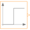
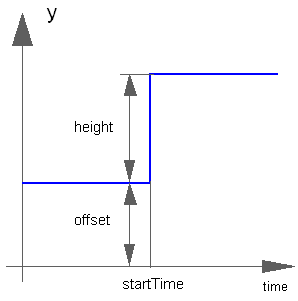

IntegerStepGenerate step signal of type Integer |

|
Information
This information is part of the Modelica Standard Library maintained by the Modelica Association.
The Integer output y is a step signal:

Parameters (3)
| offset |
Value: 0 Type: Integer Description: Offset of output signal y |
|---|---|
| startTime |
Value: 0 Type: Time (s) Description: Output y = offset for time < startTime |
| height |
Value: 1 Type: Integer Description: Height of step |
Connectors (1)
| y |
Type: IntegerOutput Description: Connector of Integer output signal |
|---|
Used in Examples (2)
|
Modelica.Blocks.Examples
Demonstrates the usage of blocks from Modelica.Blocks.MathInteger |
|
|
Modelica.Blocks.Examples
Demonstrates the usage of a signal bus |